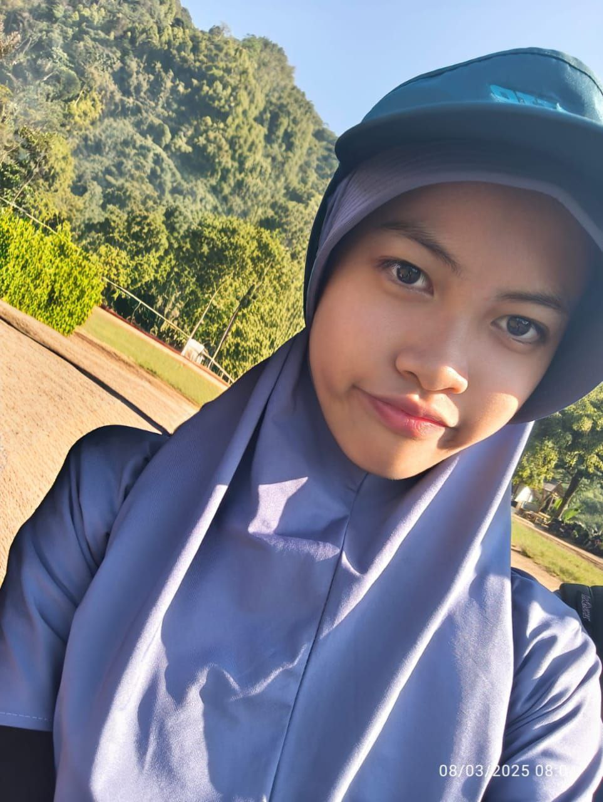

<!DOCTYPE html>
<html>
  <head>
    <!-- Font and CSS links -->
    <link rel="preconnect" href="https://fonts.googleapis.com">
    <link rel="preconnect" href="https://fonts.gstatic.com" crossorigin>
    <link href="https://fonts.googleapis.com/css2?family=Mansalva&family=Mouse+Memoirs&display=swap" rel="stylesheet">

    <link rel="stylesheet" href="style.css">
      <!DOCTYPE html>
<html>
<head>
<style>
  body {
    margin: 0;
    font-family: Arial, sans-serif;
    background-image: url('https://i.pinimg.com/736x/56/30/81/5630813f6e3bb2b3062258ccf264643f.jpg');
    background-size: cover;      
    background-repeat: repeat; 
    background-position: center;  
    height: 100vh;                
  }
    }
    .header-container {      position: relative;
      width: 100%;      height: 250px;
      overflow: hidden;    }

    .header-container img {      width: 100%;
      height: 100%;      object-fit: cover;
      display: block;    }

</style>
</head>

    <!-- Internal CSS -->
    <style>
      h1 {
        color: #003049;
      }
h1 {
  font-size: 60px;
}

      h1, h2, h3 {
        font-family: 'Mansalva', cursive; 
      }

      body {
        font-family: 'Mouse Memoirs', sans-serif; 
      }
    </style>
  </head>
  <body>
  </body>
</html>
  <!-- MEMBUAT JUDUL HALAMAN WEBSITE -->
        <title>My Biodata</title>
    <body> 
 <center> 
 <table border="0" width="100%" cellspacing="0"> 
 <tbody> 
 <!-- MEMBUAT HEADER --> 
 <tr height="200"> 
 <td colspan="3" style="background-image: url('head.png');">     <center> 
 <h1>BIODATA</h1> 
     <h3>Welcome to latisha's bio!</h3>
     <text-shadow: 2px 2px 4px rgba(0,0,0,0.2);>
 </center> 
     
 </td> 
 </tr> 
 <!-- LOGO SMPIT AL HARAKI --> 
 <tr height="80px"> 
 <td colspan="2"> 
 <center> 
  
 </center> 
     </td>
      </tr> 
  
 <!-- BIODATA --> 
 <tr height="250px" align="center" style=font-size:20px;"> 
 <td style="text-align: justify;"> 
 <p style="text-indent: 80px;">Nama &nbsp;: Latisha Qawiyyu Nurhafa</p> 
 <p style="text-indent: 80px;">Lahir &nbsp;: Duri, 21 September 2011</p> 
 <p style="text-indent: 80px;">Telepon&nbsp;: 0813-6421-4404</p> 
 <p style="text-indent: 80px;">Alamat&nbsp;: Pesona Khayangan Margonda</p> 
 <p style="text-indent: 80px;">Email&nbsp;: latisha.qawiyyu@alharaki.sch.id</p> 
 <p style="text-indent: 80px;">Hobi&nbsp;: menggambar, baking, main game</p> 
 <p style="text-indent: 80px;">Cita-cita&nbsp;: designer / business owner</p> 
<p style="text-indent: 80px;">Motto&nbsp;: Better live your life, we are running out of time.</p> 
 </td> 
  
 <!-- FOTO PRIBADI --> 
 <td> 
  <style>
     .image-container {
  position: relative;
  display: inline-block;
  width: 180px; 
}

.image-container img {
  width: 150;
  display: block;
  transition: 0.5s ease;
}

.overlay {
  position: absolute;
  top: 0;
  left: 0;
  width: 100%;
  height: 100%;
  background-color: rgba(0, 0, 0, 0.5); 
  color: white;
  display: flex;
  align-items: center;
  justify-content: center;
  opacity: 0;
  transition: 0.5s ease;
  font-size: 20px;
}

.image-container:hover img {
  filter: brightness(70%);
}

.image-container:hover .overlay {
  opacity: 1;
}
</style>
<body>

<div class="image-container">
    <a href="https://www.instagram.com/latishaqawiyyu/">
  
             <div class="overlay">follow my insta! (click) </div>
          </a>

 </td> 
 </tr> 
  

  
 <!-- ABOUT ME --> 
 <!-- Berisi mengenai hal-hal yang berkaitan dengan kamu, seperti nama panggilan, hobi, keseharian, dan cita-cita beserta alasan mengapa kamu memilih cita-cita tersebut. --> 
 <tr> 
 <td colspan="2" style="padding: 80px; font-size: 20px;"> 
 <center>
 <h1>About Me</h1> 
 </center> 

<p style="text-align: justify;"> 
 Haii! Nama aku Latisha. Hobi aku menggambar, melukis, baking, dan main game. Sedikit fun fact tentang aku, aku dulu suka banget sama Dinosaurs. Pelajaran favoritku di sekolah adalah Matematika dan English! Aku lahir di Duri tanggal 21 September 2011. Kayaknya sebagian besar dari kalian ga tau apa itu Duri. Nahh, Duri itu adalah sebuah kota di Kecamatan Mandau, Kabupaten Bengkalis, Provinsi Riau! Dan sekarang aku tinggal di Depok. Aku sekarang sedang belajar bahasa Spanyol dan Mandarin. Warna favoritku biru. Makanan favoritku sushi dan minuman favoritku thai tea. Aku suka sepakbola! tapi aku ga main olahraga itu si. Aku sekarang lagi belajar tennis, golf, dan pickleball. Film favoritku adalah Flipped. Aku suka genre romance, musical, dan fantasy.
 </p> 
 </td> 
 </tr> 
<!-- Fav Songs -->
     <tr>
         <td colspan="2" class="section">
             <h1 class="section-title">My Favourite Songs!</h1>
             <div class="songs-horizontal">
                 <iframe data-testid="embed-iframe" style="border-radius:12px" src="https://open.spotify.com/embed/track/27rZYxE4l21wTaovX4WTnI?utm_source=generator" width="250" height="152" frameBorder="0" allowfullscreen="" allow="autoplay; clipboard-write; encrypted-media; fullscreen; picture-in-picture" loading="lazy"></iframe>
                 <iframe data-testid="embed-iframe" style="border-radius:12px" src="https://open.spotify.com/embed/track/2fXwCWkh6YG5zU1IyvQrbs?utm_source=generator" width="250" height="152" frameBorder="0" allowfullscreen="" allow="autoplay; clipboard-write; encrypted-media; fullscreen; picture-in-picture" loading="lazy"></iframe>
                 <iframe data-testid="embed-iframe" style="border-radius:12px" src="https://open.spotify.com/embed/track/3GCdLUSnKSMJhs4Tj6CV3s?utm_source=generator&theme=0" width="250" height="152" frameBorder="0" allowfullscreen="" allow="autoplay; clipboard-write; encrypted-media; fullscreen; picture-in-picture" loading="lazy"></iframe>
                 <iframe data-testid="embed-iframe" style="border-radius:12px" src="https://open.spotify.com/embed/track/0IxyqFVAXqBg468Z9nYhQF?utm_source=generator&theme=0" width="250" height="152" frameBorder="0" allowfullscreen="" allow="autoplay; clipboard-write; encrypted-media; fullscreen; picture-in-picture" loading="lazy"></iframe>
<style>
    .section-title {
  text-align: center;
}

.songs-horizontal {
  display: flex;
  justify-content: center; 
  flex-wrap: wrap;         
  gap: 15px;
  padding: 10px;
}
</style>


             </div>
         </td>
         
     </tr>
<!-- fav things -->
    <tr>
        <td colspan="2" class="section">
            <h1 class="section-title">My Fav things!</h1>
            <div class="things-horizontal">
                
                <div class="thing-container">
  
             <div class="overlay">math!</div>
                    </div>
              <div class="thing-container">  
  
             <div class="overlay">ducks and rabbits!</div>
                  </div>
                <div class="thing-container">  
  
             <div class="overlay">dinosaurs!</div>
                  </div>
                <div class="thing-container">  
  
             <div class="overlay">cookies!</div>
                  </div>
 
  <style>
         .section-title {
  text-align: center;
}

.things-horizontal {
  display: flex;
  justify-content: center; 
  flex-wrap: wrap;         
  gap: 15px;
  padding: 10Spx;
}
     .thing-container {
  position: relative;
  display: inline-block;
  width: 200px; 
}

.thing-container img {
  width: 150;
  display: block;
  transition: 0.5s ease;
}

.overlay {
  position: absolute;
  top: 0;
  left: 0;
  width: 100%;
  height: 100%;
  background-color: rgba(0, 0, 0, 0.5); 
  color: white;
  display: flex;
  align-items: center;
  justify-content: center;
  opacity: 0;
  transition: 0.5s ease;
  font-size: 20px;
}

.thing-container:hover img {
  filter: brightness(70%);
}

.thing-container:hover .overlay {
  opacity: 1;
}
</style>

             </div>
         </td>
         
     </tr>
  
 <!-- EMBED YOUTUBE VIDEO --> 
 <!-- Embed video yang digunakan merupakan tugas vlog yang diberikan sebelumnya, video tersebut harus ada perkenalan diri -->  <tr height="300px"> 
 <td colspan="3"> 
     <style padding: "100px;"></style>
 <center> 
 <iframe width="560" height="315" src="https://www.youtube.com/embed/3iaFwiz-Ty0?si=olUM_DIIlH0YDQA5" title="YouTube video player" frameborder="0" allow="accelerometer; autoplay; clipboard-write; encrypted-media; gyroscope; picture-in-picture; web-share" referrerpolicy="strict-origin-when-cross-origin" allowfullscreen  style="margin: 40px 0;"></iframe>
 </center> 
 </td> 
 </tr> 
 </tbody> 
 </table> 
 </center>
         <!-- FOOTER --> 
 <footer style="background-color: #B5E2E8; padding: 10px;">  <center>&copy; 2025 Latisha Qawiyyu N</center> 
 </footer> 
</body>